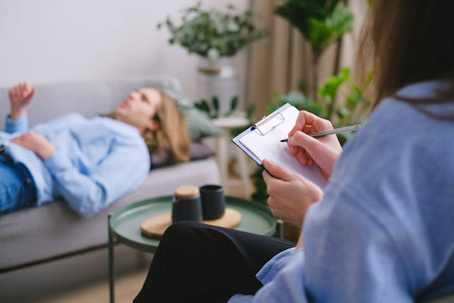
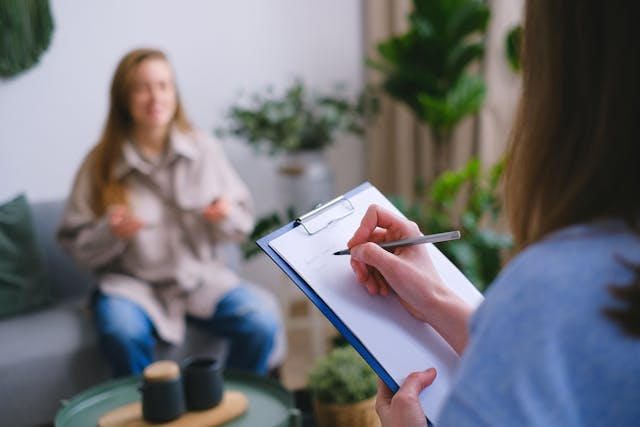

W czym pomagam?
Pomagam moim pacjontom w niżej wymienionych problemach. Kliknij wybrany problem, aby dowiedzieć się więcej:
- Lęki utrudniające funkcjonowanie
- Problemy wychowawcze
- Trudności emocjonalne (np. związane z dużymi zmianami w życiu/rodzinie)
- Wybuchy złości
- Zaburzenia nastroju i gwałtowne zmiany nastroju
- Dolegliwości psychosomatyczne (np. bóle brzucha bez określonej choroby)
- Problemy związane z wydalaniem (moczenie się, moczenie nocne, zaparcia czynnościowe, odmowa korzystania z toalety)
- Nadmierna nieśmiałość, niska samoocena i niskie poczucie własnej wartości
- Trudności w kontaktach z rówieśnikami i zaburzenia w relacjach międzyludzkich
- Fobie

Ile kosztuje wizyta psychologiczna? Czy jest jakiś cennik?
Koszt wizyty jest stały i wynosi 160 PLN.
Dostępne metody płatności to:
- Gotówka
- Blik na telefon
Na życzenie wystawiam fakturę za wizyty zrealizowane w danym miesiącu.
Jak umówić się na wizytę?
Zachęcam do kontaktu za pośrednictwem:
- Telefonu: 511315146
- Poczty email: ewagreszczuk@op.pl
Więcej informacji na temat możliwości kontaktu i lokalizacji gabinetu znajdą Państwo na stronie Kontakt.

Jak pracuję z dzieckiem i rodzicami?
Pracuję indywidualnie z dziećmi oraz z ich rodzicami.
Wywiad:
Na pierwszą wizytę zapraszam zawsze tylko rodzica lub rodziców. W jej trakcie omawiamy trudności, jakich doświadcza dziecko. Innymi słow, pierwsza wizyta to wywiad, który pozwala mi zebrać możliwie jak najwięcej informacji i przygotować się przed rozpoczęciem terapii.
Terapia:
W trakcie kolejnych wizyt pracuję indywidualnie z dzieckiem, informując rodziców o postępach terapii na koniec każdej wizyty.